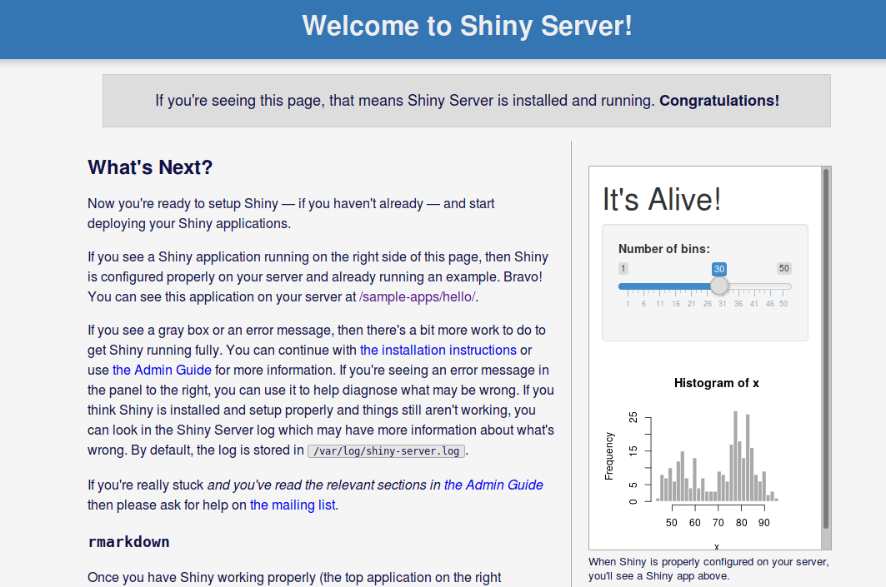
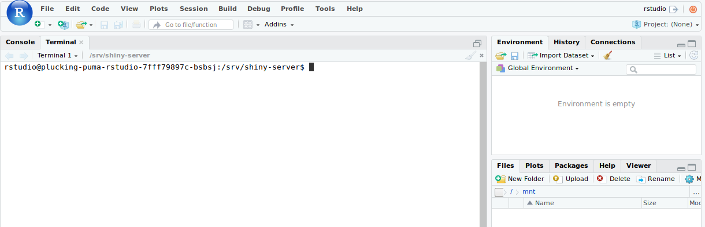

Usage¶
How to use RStudio¶
For a general tutorial on how to use RStudio, see RStudio 101. For a webinar with an in-depth explanation of RStudio can be found, see RStudio webinars.
Serving Shiny applications¶
The rstudio package has built-in support for serving Shiny web applications.
Shiny can be used to create interactive web applications directly in R.
By default, a collection of sample applications are hosted on shiny-<your application URL here>.

By default, all shiny apps are served from the /srv/shiny-server
directory. In order to add and host a new app, copy your application to
/srv/shiny-server. One way of doing this is using the terminal which is built
into Rstudio. The terminal can accessed through the Terminal tab, which is
found besides the Console tab in the upper part of the UI.

For information about how to create new Shiny apps, see Learn Shiny.
How to add new packages¶
In case you are missing some packages from the default application image, you can add those packages yourself by creating a custom docker image. See this tutorial for generic instructions on how to add packages.
After having read the tutorial above, you can use the dockerfile below as a starting point when creating the dockerfile that adds new packages.
# See the value of dockerImage in
#
# https://github.com/Uninett/helm-charts/blob/master/repos/stable/rstudio/values.yaml
#
# to determine the latest base image
FROM quay.io/uninett/rstudio-server:<use latest tag here>
# Install system packages
USER root
RUN apt update && apt install -y emacs && rm -rf /tmp/downloaded_packages
# Install R packages
USER rstudio
RUN install2.r randomForest